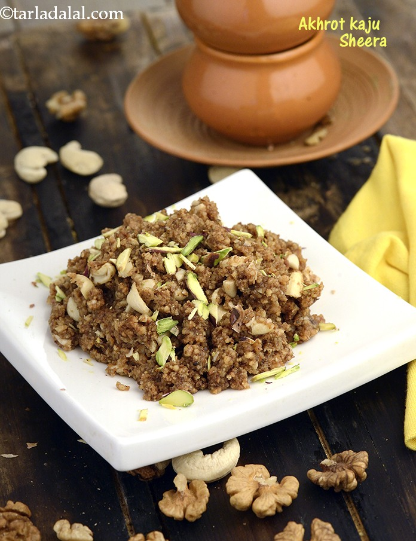

Kaju Akroth Halwa

Description
This is a very tasty and heavy in terms of calories and fat content. It is
completely made up of finest cashew and Walnut. It is most famous in
Indian Wedding, particularly in the cities like Jodhpur and Pali.
Ingredients
- 250 GMS CASHEW NUT {Should be coarse- grind it like Bajra }
- 125 GMS WALNUT {Chopped in small pieces }
- 125 GMS GHEE
- 150 GMS SUGAR
- 1 TSP PISTA SLICED
- 1 Pinch SAFFRON
Steps
-
Heat ghee in a thick-bottomed pan. Then add cashew-nut and cook it on a
slow flame (approx 4 to 5 min) till it gives out aroma. Please note :~
The colour of cashew-nut should not change.
-
Then add chopped walnut in thepan, switch off the gas and stir
constantly till it mix well. Keep the mixture aside.
-
For making sugar syrup - Boil sugar in ½ cup water in a separate pan.
The syrup should have 2 string consistency.
-
Add the sugar syrup to the walnut & cashew-nut mixture. Stir
continuously till it mix properly. Then add sliced pista & saffron.
-
Decorate the halwa with walnut & serve. Note :- if you see it is little
dry then add 1-2 tbsp boiling hot water in it.